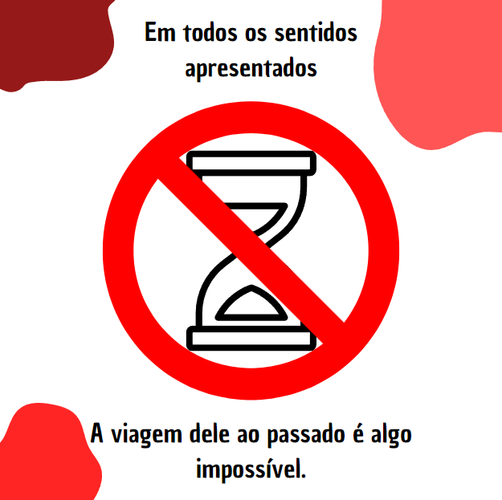
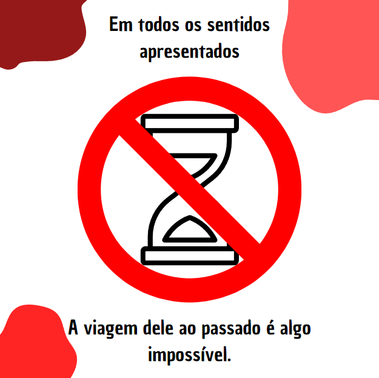

Pesquisa Sobre IA
A IA Bard é uma ferramenta colaborativa de IA desenvolvida pela Google. Ela foi criada para ajudar a dar vida às suas ideias. Bard é um serviço experimental de IA conversacional, alimentado pelo LaMDA, que permite colaborar com a IA generativa. Com o Bard, você pode interagir e conversar com a IA para obter respostas e insights criativos. É uma maneira inovadora de explorar o potencial da inteligência artificial na criação e na geração de conteúdo. A Google está constantemente atualizando suas tecnologias de IA, e o Bard é apenas uma das muitas iniciativas nessa área.
Pesquisa Sobre Realidade Virtual
A realidade virtual (RV) é uma tecnologia que cria ambientes simulados por computador, visando proporcionar imersão total ao usuário. Com aplicações em entretenimento, treinamento, educação, turismo e saúde, a RV utiliza dispositivos como óculos e luvas de realidade virtual para criar experiências imersivas. Embora enfrente desafios como a latência e custo, a RV continua a evoluir e encontrar novas aplicações em diversos setores.
Pesquisa Sobre Realidade Aumentada
A realidade aumentada (RA) integra elementos virtuais ao mundo real, utilizando câmeras e sensores para sobrepor conteúdo gerado por computador à imagem do ambiente real em tempo real. Essa tecnologia tem aplicações em diversos setores, como entretenimento, educação, medicina, arquitetura e publicidade, proporcionando experiências imersivas e interativas. Apesar dos benefícios, a RA enfrenta desafios como a necessidade de hardware adequado e o desenvolvimento de conteúdo de qualidade, mas continua a evoluir e encontrar novas aplicações inovadoras.
Pesquisa Sobre Ciência de Dados
A ciência de dados envolve o estudo e aplicação de métodos para extrair conhecimento de grandes volumes de dados. Ela combina estatística, matemática, programação e conhecimento de domínio para coletar, limpar, analisar e visualizar dados a fim de obter insights valiosos e tomar decisões estratégicas em diversos setores. Além disso, a ciência de dados levanta questões éticas e de privacidade devido à natureza dos dados manipulados, destacando a importância de garantir a proteção e o uso responsável das informações obtidas.
Pesquisa Sobre IOT
A Internet das Coisas (IoT) é a interconexão de dispositivos, plataformas e sistemas à internet, permitindo a troca de dados entre eles. Essa tecnologia tem aplicações em diversos setores, como casas inteligentes, cidades inteligentes e indústria 4.0, trazendo benefícios como automação, eficiência, segurança e inovação. No entanto, a IoT também apresenta desafios, como a segurança dos dados e a interoperabilidade entre dispositivos e sistemas, enquanto continua a evoluir e a transformar a sociedade.
 
